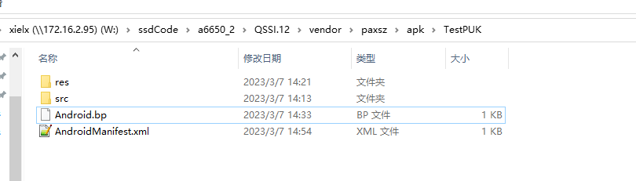

nfc 流程截图¶

nfc术语¶
DPC = dynamic power control¶
Therefore a process is needed to control the output power and the driver current, and to adapt it to the loading and detuning, if needed. This process is automatically done with the dynamic power control (DPC).
DWL_REQ = DoWnLoad REQuest pin¶
当dwl_req 拉高,并且 reset脚从低到高,芯片进入 download模式
When the DWL_REQ pin is set to the digital high level (this pin is referenced to VDD(PAD) power level) at reset (VEN transition from digital low to digital high), the chip will boot in download mode.
In this case, the download protocol described in the PN7160 User Manual can be used to load a new firmware image into the chip.
This firmware upgrade feature is fully supported by the NXP HAL middleware stack (Android and Linux) provided that the DWL_REQ (DL_REQ) pin is connected a GPIO pin of the host controller.
NFC = Near Field Communication¶
NFCC = Near Field Communication Controller¶
VEN = V ENable pin (PN7160 Hard reset control)¶
WKUP_REQ = Wake-up request¶
A6650 项目,没有接nfc wake up 脚
When the PN7160 goes in standby mode, there is 3 possibilities to wake it up:
PN7160 detects an external RF field
Host controller sends a command (via host interface) to PN7160
Host drives WKUP_REQ pin to high level
DH = Device Host¶
DH-NFCEE = NFC Execution Environment running on the DH¶
HCI = Host Controller Interface¶
HCP = Host Controller Protocol¶
HDLL = Host Data Link Layer¶
LPCD = Low Power Card Detector¶
NCI = NFC Controller Interface¶
NFCEE = NFC Execution Environment¶
RF = Radio Frequency¶
RFU = Reserved For Future Use¶
Peer to Peer = P2P¶
VDD(TX)¶
天线输出能力,由VDD(up)控制 VDD(TX) 2.7v-5.25v
The voltage level on TX output buffer is coming from VDD(TX) and this pin is powered internally by the PN7160 thanks to the TXLDO block. The output voltage of this TXLDO can be set between 2.7 V to 5.25 V depending on the VDD(UP) voltage.
“NFCEE_NDEF” is an NFCC embedded NDEF tag emulation, configured by the DH.¶
Power-up sequences,上电时序¶
PN7160_PN7161.pdf,第29页, Ven脚,在power脚拉高后,再拉高
Power-down sequences¶
During power-down sequence, VEN shall always be set low before VDD(PAD) is shut down.
Reader/Writer operation in poll mode¶